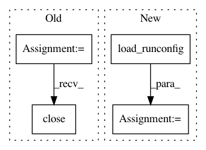

55a0700a659abde74acd0972922ef563c30e8e2c,pynets/plotting/plot_graphs.py,,plot_conn_mat_struct,#Any#Any#Any#Any#Any#Any#Any#Any#Any#Any#Any#Any#Any#Any#Any#,378
Before Change
" runconfig.yaml"
)
sys.exit(0)
stream.close()
plot_graphs.plot_conn_mat(
conn_matrix, labels, out_path_fig, cmap=plt.get_cmap(cmap_name)
)
After Change
".png",
)
hardcoded_params = load_runconfig()
try:
cmap_name = hardcoded_params["plotting"]["structural"][
"adjacency"]["color_theme"][0]
except KeyError as e:
In pattern: SUPERPATTERN
Frequency: 4
Non-data size: 4
Instances
Project Name: dPys/PyNets
Commit Name: 55a0700a659abde74acd0972922ef563c30e8e2c
Time: 2020-10-26
Author: dpisner@utexas.edu
File Name: pynets/plotting/plot_graphs.py
Class Name:
Method Name: plot_conn_mat_struct
Project Name: dPys/PyNets
Commit Name: 55a0700a659abde74acd0972922ef563c30e8e2c
Time: 2020-10-26
Author: dpisner@utexas.edu
File Name: pynets/plotting/plot_graphs.py
Class Name:
Method Name: plot_conn_mat
Project Name: dPys/PyNets
Commit Name: 55a0700a659abde74acd0972922ef563c30e8e2c
Time: 2020-10-26
Author: dpisner@utexas.edu
File Name: pynets/plotting/plot_graphs.py
Class Name:
Method Name: plot_conn_mat_func
Project Name: dPys/PyNets
Commit Name: 55a0700a659abde74acd0972922ef563c30e8e2c
Time: 2020-10-26
Author: dpisner@utexas.edu
File Name: pynets/plotting/plot_graphs.py
Class Name:
Method Name: plot_community_conn_mat